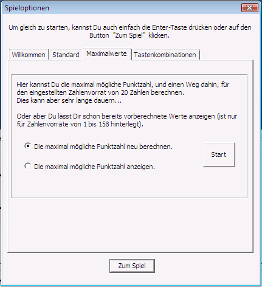

Entstehung des Zahlenhai-Spiels
Die Idee zum Zahlenhai-Spiel stammt von Herrn Lothar Carl, der auch die ursprüngliche Version in Delphi programmierte. Das Zahlenhai-Spiel dient zur Verbesserung und zum spielerischen Training der Kenntnisse über Teilbarkeiten und über Primzahlen in den Klassen 6 bis 10.
Das Original-Zahlenhai-Spiel von Herrn Carl war Freeware, aber nicht Open-Source.
Leider ist es nicht mehr zugänglich:
http://archive.is/djxT9
Herr Carl hat uns dankenswerterweise erlaubt, seine Idee und seinen Spielnamen für eine Neuimplementierung uneingeschränkt zu nutzen. Das nachfolgende Bild zeigt die ursprüngliche Fassung des Zahlenhai-Spiels:


Das neue Zahlenhai-Programm hier ist Open-Source und Freeware.
Im Englischen heißt diese Spielidee bezeichnenderweise "Taxman".
Die Seite https://oeis.org/A019312 der Integer Sequences enthält die bekannten Maximalwerte. Dort kann die Folge auch gleich grafisch angezeigt werden. Bei der ATT Integer Sequence ist - dank Dan Hoey - inzwischen in den "Notes" auch der optimale Weg angegeben. Eine Formel für den optimalen Wert ist bisher nicht bekannt.
Alle bisher bekannten Verfahren zur Berechnung des optimalen Weges benötigen für große Werte von n sehr lange. Im neuen Java-CrypTool sind heuristische Verfahren implementiert, die gute -- aber nicht unbedingt optimale Wege -- suchen. Diese Verfahren sind sehr schnell.
Im März 2015 wurde die Folge der Maximalwerte ausgedehnt bis n=404.
(Stand: Februar 2017)
1. Programmieren lernen
Innerhalb der Ausbildung im 1. Lehrjahr zum Fachinformatiker wurde die Idee von Herrn Carl als Vorlage gewählt, um Programmierkenntnisse in C++ zu vermitteln und diese Kenntnisse später durch Erweiterungen des Programms zu vertiefen.
Zuerst wurde das Verfahren des Zahlenhai-Spiels in C++ als "Konsolenprogramm" implementiert (Konsolenprogramme machen nur eine Textein- und -ausgabe. Sie werden von der Kommandozeile gestartet: Unter Windows ist das Kommandozeilenfenster sehr versteckt: siehe Start \ Alle Programme \ Zubehör \ Eingabeaufforderung).
Erst als die Logik des Algorithmus korrekt implementiert war, wurde eine grafische Oberfläche erstellt.
Danach wurde das Programm stetig erweitert: Die erste Erweiterung bestand darin, das Spiel mit mehr als 50 Zahlen spielen zu können (50 Zahlen waren die Obergrenze in dem Spiel von Herrn Carl). Dafür wurde ein Reiter-Control (Tab) verwendet, auf dem sich 30 Buttons befinden, die je nach ausgewähltem Reiter ihre Beschriftung und somit auch ihren Wert ändern.
Dadurch wurde die maximal mögliche Anzahl an Zahlen auf 9999 erhöht. Die Grenze ist im Quellcode so vorgegeben und ist bedingt durch die Größe der Buttons und der Reiter. Es wäre auch nicht sinnvoll, mit noch mehr Zahlen zu spielen, da man bei so einer Menge gleichzeitig sehr viele Teiler von sehr vielen Zahlen berücksichtigen muss und dadurch auch schnell den Überblick über das Spiel verliert.
Das Spielfenster und alle Teile darin haben eine feste Größe. Wir hätten gern das Fenster wenigstens in vertikaler Richtung so größenveränderlich gemacht, dass sich die Spielverlaufstabelle entsprechend anpasst, leider bot uns der Layout-Manager im Ressourceneditor von Visual C++ 6.0 und Visual C++ 7.1 (Visual Studio 2003) keine Möglichkeit für das so genannte "Andocken" von grafischen Elementen an die Dialogmasken. Nur die Spalten der Spielverlaufstabelle sind in ihrer Breite veränderbar, damit sich der Spieler wirklich alle Punkte, die der Zahlenhai erhalten hat, anschauen kann. Die Spalten passen sich aber nicht automatisch ihrem Inhalt an. Die Größenveränderlichkeit wäre eine gute Aufgabe für eine zukünftige Version, die den Grafikmechanismus WPF von Windows 7 benutzt (siehe TODO #16 unten in Kapitel 7 dieser Onlinehilfe-Seite).

2. Maximal erreichbare Punktzahl ausgeben
Während des Testens kam mehrfach die Frage auf, wie viel Punkte der Spieler maximal erreichen kann. Um dies zu beantworten, wurde eine Funktion geschrieben, die die maximal erreichbare Punktzahl ausrechnet. Drückt man auf den Button Start, welcher sich in dem "Spieloptionen"-Fenster (Reiter "Maximale Punktzahl") befindet, kann man zwischen zwei Algorithmen wählen:
Brute-Force-Algorithmus: Die hier implementierte Berechnung lässt das Programm jedes mögliche Spiel und jeden möglichen Spielzug spielen und die erreichten Punkte vergleichen.
Back-Tracking-Algorithmus: Der Algorithmus arbeitet nach dem Versuch-und-Irrtum-Prinzip; Teillösungen werden Schritt für Schritt zu einer Gesamtlösung zusammengesetzt. Weitere Informationen zu Back-Tracking-Algorithmen findest Du hier.
Nach der Auswahl des Algorithmus erhält man:

Da die Berechnung für eine größere Anzahl an Zahlen sehr lange dauert, wird der Spieler vorher gefragt, ob diese Funktion wirklich ausgeführt werden soll.


Bemerkung:
Die maximal möglichen Punktzahlen sind für die Zahlenvorräte von 1 bis 158 schon in der Datei "GameData.txt" abgelegt und müssen nicht noch einmal berechnet werden, sondern können auch sofort ausgegeben werden.

Außerdem kann sich der Spieler auch noch einen optimalen Weg (also die Folge der Zahlen, die zur maximalen Punktzahl führt) anzeigen lassen.

3. Durchführung und Wiederaufsetzten bei überlangen Berechnungen
Da die Berechnung der maximal möglichen Punkte bei größeren Zahlen mit unserem Brute-Force-Algorithmus extrem lange dauert, musste ein Weg gefunden werden, um die Berechnung der Zahlen unterbrechen und zu einem späteren Zeitpunkt wieder fortsetzen zu können (z.B. weil der Strom ausfiel oder man den Rechner für andere Aufgaben brauchte). Dazu werden alle für die Berechnung benötigten Zwischenwerte in geringen Zeitabständen in einer Textdatei gespeichert. Die Datei "ZahlenHaiSuche[Anzahl der Zahlen].zha" wird in demselben Ordner gespeichert, in dem sich auch die Datei "Zahlenhai.exe" befindet. Sie lässt sich mit einem Texteditor öffnen und anschauen.

Wenn jetzt eine neue Berechnung der maximalen Punktzahl gestartet wird, schaut das Programm erst, ob schon eine Datei mit gespeicherten Werten existiert, liest diese ein und setzt dann die Suche an der eingelesenen Stelle fort. Auch ohne Wissen darüber, was für Werte in der Datei gespeichert werden und wie die Brute-Force-Suche funktioniert, kannst Du, einen schnellen Rechner und viel Zeit vorausgesetzt, auch selbst neue Werte berechnen.
Bemerkung:
Unter den beiden Algorithmen, die das optimale Ergebnis suchen (Brute-Force und Back-Tracking), ist das Wiederaufsetzen auf Zwischenergebnisse nur für das Brute-Force-Verfahren implementiert.
Für Zahlen > 158 bitten wir um Deine Mithilfe: siehe Challenge. Wenn Du für Zahlen > 158 eine maximale Punktzahl und einen optimalen Weg gefunden hast, würden wir uns sehr freuen, wenn Du diese Ergebnisse dann an bernhard.esslinger@uni-siegen.de sendest.
4. Programmsteuerung
a) Auswahl der Zahlen im Muschelfeld
Um die Benutzerfreundlichkeit in dem Programm zu erhöhen, wurde auch noch eine reine Tastatursteuerung implementiert: Damit kann sich der Benutzer mit den Pfeiltasten (links, rechts, hoch, runter) frei auf den mit Zahlen beschrifteten Muscheln, sowie den dazugehörigen Reitern, bewegen. In früheren Versionen konnte man sich nur mit den Pfeiltasten links und rechts, sowie mit der Tabulator-Taste bewegen sowie mit der Leertaste eine Zahl auswählen. Auswählen kann man die Zahlen dann mit der Enter- oder der Leertaste.
b) Rückgängig machen und wieder Vorwärts-Gehen mit den Undo- und Redo-Buttons
Im Zahlenhai kannst Du über den Rückwärts-Button (Undo)  bereits gespielte Spielzüge rückgängig machen, um Dich für eine andere Zahl zu entscheiden. Mit dem Vorwärts-Button (Redo)
bereits gespielte Spielzüge rückgängig machen, um Dich für eine andere Zahl zu entscheiden. Mit dem Vorwärts-Button (Redo)  kannst Du Deine zurück genommenen Spielzüge auch wieder vorwärts gehen, solange Du keine Änderungen im Spielverlauf vorgenommen hast.
kannst Du Deine zurück genommenen Spielzüge auch wieder vorwärts gehen, solange Du keine Änderungen im Spielverlauf vorgenommen hast.
5. Tests
An den Tests des Programms waren neben den Mitarbeitern aus der Abteilung und einigen Auszubildenden auch Test-User im Internet beteiligt. Dadurch ergaben sich viele praktische Vorschläge zur Verbesserung des Programms wie zum Beispiel die ToolTips, die Steuerung über die Tastatur oder das Durchführen langer Berechnungen durch Wiederaufsetzen. Später kamen von verschiedenen Seiten interessante Untersuchungen zum zugrundeliegenden zahlentheoretischen Problem zusammen.
6. Optische Gestaltung
Damit das Programm mehr wie ein Spiel und weniger wie eine normale Büroanwendung aussieht, musste auch die optische Aufmachung des Spieles verbessert werden. Der erste Schritt zu einer besseren optischen Gestaltung war die Veränderung der Buttons für den Zahlenvorrat. Dafür wurde das Bild einer Muschel entsprechend den verschiedenen Zuständen eines Buttons, also "gedrückt", "deaktiviert" oder "Focus", verändert. Die Buttons an sich wurden transparent gemacht, so dass es so aussieht, als wären die Ränder der Muschel auch der Rand des Buttons.
Du kannst die Muscheln jederzeit während des Spieles durch einfache Buttons ersetzen. Dafür brauchst Du nur die Tastenkombination SHIFT+ALT+C auf Deiner Tastatur drücken. Die Zahlen auf den einfachen Buttons sind (für manche Menschen) besser lesbar. Erneutes Drücken von SHIFT+ALT+C zeigt wieder die Muscheldarstellung.
Verschiedene Haifisch-Bilder wurden in das Spielfenster eingefügt; und jedes Mal, wenn Du den Button Neues Spiel drückst, erscheint ein neues Bild.
Bei den Muschel-Bildern wurde die Schriftfarbe an die Farbe der Bilder angepasst. Zusätzlich wurde die Spielverlaufstabelle in den Farben der Muscheln eingefärbt.
Dann wurden die normalen rechteckigen ToolTips über den Muscheln durch abgerundete Fenster, so genannte Balloon-Tips, ersetzt.
Um den Dialog noch mehr wie ein Spiel aussehen zu lassen, wurde ein Dialogfeld, das aussieht wie eine LED-Anzeige, hinzugefügt: Während des Spiels zeigt dieses groß den Punktestand an.
Die Optionen wurden auf die Reiter Willkommen, Standard, Maximale Punktzahl und Tastenkombinationen verteilt, so dass jede Optionen-Art für sich alleine steht. In dem Reiter Farben soll man später noch die Möglichkeit haben, sich die Farben der Tabelle und die Schriftfarben, ähnlich wie bei MS Paint, selber auszusuchen (siehe TODO #5).
Bei der Gestaltung der Buttons für den Zahlenvorrat, der LED-Anzeige und der farbigen Darstellung der Spielverlaufstabelle wurde auf Quellcodebeispiele von http://www.codeproject.com zurückgegriffen.
7. TODOs - Wie man das Programm weiter verbessern kann.
Das Zahlenhai-Programm kann natürlich noch weiterentwickelt werden. Vorschläge für eine Version 2.0 sind:
Allgemeine Hinweise zur Benutzeroberfläche findest Du hier. Und Tipps zum Spielverlauf findest Du hier.
Aus rechtlichen Gründen müssen wir explizit auf Lizenzbestimmungen / Haftungsausschluss hinweisen.